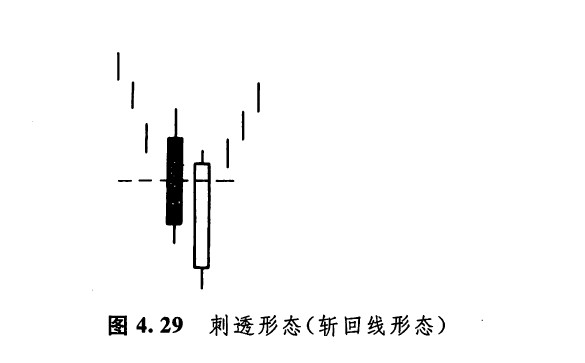
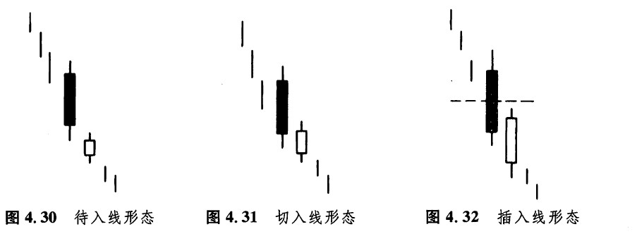
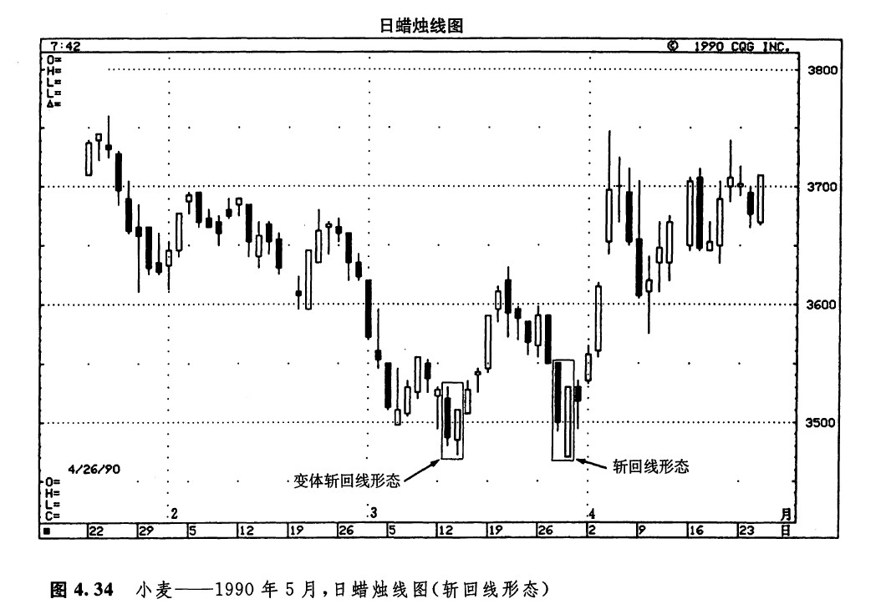
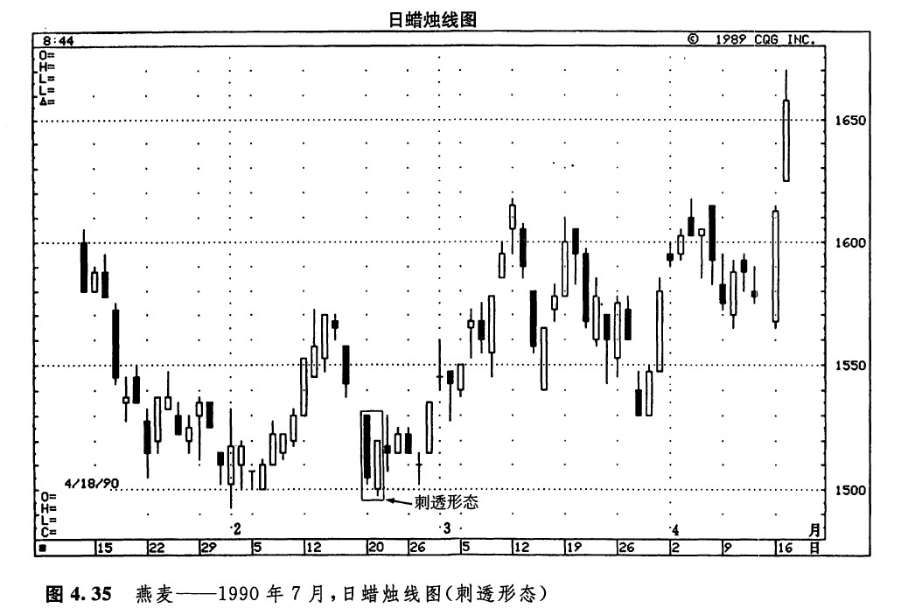
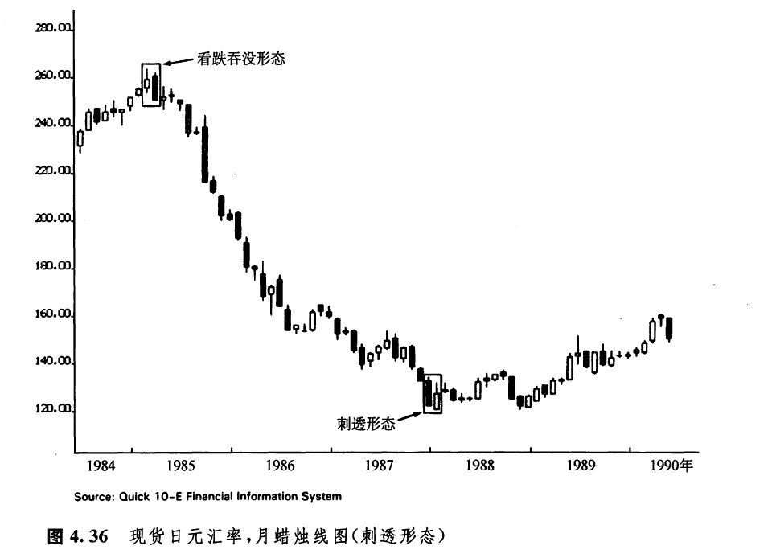

剌透形态（斩回线形态）
在我的许多讲座中，当我介绍完看跌的乌云盖顶形态以后，过不了多会儿，就会有听众提间，有没有与乌云盖顶形态相反的形态。是的，有这样的形态，它的名称为剌透形态（或者说，斩回线形态）。乌云盖顶形态属于顶部反转信号，那么，剌透形态作为它的反面形态，当然是底部反转信号（如图4.29所示）。斩回线形态出现在下跌的市场上，也是由两根蜡烛线组成的。其中第一根蜡烛线具有黑色实体，而第二根蜡烛线则具有长长的白色实体。在白色蜡烛线这一天，市场的开市价曾急剧地下跌至前一个黑色蜡烛线的最低价之下，但是不久市场又将价格推升回来，形成了一根相对较长的白色实体，并且其收市价已经向上超越了前一天的黑色实体的中点。

看涨的刺透形态与看涨吞没形态同属一个家族。在看涨吞没形态中，白色实体吞没了前面的那条黑色实体。而在看涨的剌透形态中，白色实体仅仅向上剌入了前一个黑色实体的内部。在剌透形态中，白色实体向上剌入黑色实体的程度越大，那么，该形态构成底部反转信号的可能性就越大。在理想的剌透形态中，白色实体必须向上穿入到前一个黑色实体的中点水平以上。在看涨吞没形态之后，或者在看涨的刺透形态之后，如果跟着出现了一条长长的黑色蜡烛线，并且它的收市价低于上述两种形态的最低点，则说明下降趋势已经卷土重来，新一轮下跌行情开始了。
关于刺透形态背后的心理过程，可以作如下理解：市场本来处于下降趋势中，刺透形态第一天的疲弱的黑色实体加强了这种市场预期。第二天，市场以向下跳空的形式开市。到此刻为止，熊方观察着行情的发展，感觉诸事顺遂。可是后来，到当日收市的时候，市场却涨了回去，结果收市价不仅完全回到了前一天收市价的水平，而且变本加厉地向上大大超越了这个水平。现在，熊方开始对手上的空头头寸忐忑不安起来。有些市场参与者一直在寻找买进的机会，他们据此推断，市场不能够维持这个新低价位，或许这正是入市做多的大好时机。
关于剌透形态，也有四项参考性因素，如果剌透形态兼具这些特征，那么它们的技术分量将大为增强。这四项参考因素与乌云盖顶形态的四项参考因素内容相同，而方向相反（参见前一部分的有关内容）。在讲述乌云盖顶的时候，我曾经提到，虽然有些日本交易商更愿意看到黑色实体的收市价向下穿过了前一个白色实体的中点，但是在这一条判别准则上，还是有一定的灵活余地的。然而，在斩回线形态中，却没有任何灵活的余地。在斩回线形态中，白色蜡烛线的实体必须向上推进到黑色蜡烛线实体的中点之上。之所以看涨的剌透形态不如乌云盖顶形态灵活，是因为日本人认为处理底部反转形态必须更加谨慎。他们对形状近似的价格形态做了进一步的区分，将它们分为三种情况，分别称为待入线形态、切入线形态、插入线形态（参见图4.30到图4.32）。这三种形态虽然与刺透形态在基本构造上是相似的，但是，正是由于其中的白色实体向上穿入黑色实体的程度达不到黑色实体的中点，它们被看作是看跌的信号。
综上所述，上述三类潜在的看跌信号（如图4.30到图4.32所示）与看涨的斩回线形态（如图4.29所示）在图形上统统是一样的。它们之间的区别仅仅在于，其中的白色蜡烛线实体向上穿入黑色蜡烛线实体的程度是不同的。在待入线形态中，白色蜡烛线（其外形通常是比较小的）的收市价位于前一个蜡烛线的最低价下方附近。在切人线形态中，白色蜡烛线（它也应当是较小的白色蜡烛线）的收市价稍稍进入到前一个黑色实体的范围之内。在插入线形态中，白色蜡烛线比上述两个形态的更长一些，其收市价也更多地刺入前一个黑色实体之内，但是没有达到黑色实体中点的水平。本形态同前两个形态相比，稍稍坚挺一些。
在市场形成了上述三类形态的情况下，只要价格再次下跌到其中的白色蜡烛线的最低点以下，交易商就应当明白，卖出的好机会来了（请注意，图4.32所示的插入线形态如果处在下跌行情中，是看跌的，但是，如果它处在上升行情中，则应该视为看涨信号。另外，在下跌行情中，如果市场在数天之内接连形成了两个插入线形态，那么，这种情况也属于看涨信号）。
能不能将图4.30到4.32所示的每种形态都牢记于心，并不要紧。您只要记住，在斩回线形态中，白色蜡烛线的实体必须向上推进到黑色蜡烛线实体的中点以上，才能够构成底部反转信号。

如图4.33所示，4月27日，熊方成功地将市场打压到当前行情的新低水平，形成了一根长长的黑色实体。次日，市场以较低的价位开市。但是后来，这个开市价竟演化为当日的最低价，到收市时，图示波音公司的股票价格已经深深地向上穿进了前一日的黑色实体之内。于是，4月27日和28日的两根蜡烛线构成了一个看涨的刺透形态。

在图4.34中，在3月26日所在的一个星期里，出现了一个经典的斩回线形态。请注意，在其中的白色实体之前，是一根非常疲软的长长的黑色实体。在白色蜡烛线当日，市场开市于当前行情的新低水平。但是，当日的收市价非常坚挺，深深地向上推进到前一个黑色实体的内部。这一事实有力地说明，熊方已经丧失了对市场的控制权。这根白色蜡烛线是一个极其坚挺的交易日。它开市于最低价（也就是说，它是秃脚的），收市于最高价（也就是说，它是秃头的）。请注意，这个坚挺的剌透形态终结了它之前的那轮抛售行情。这段抛售行情是由3月19日和20日的看跌吞没形态引发的。

本图例为小麦市场。在3月12日所在的那个星期里，产生了另一个变体的刺透形态。为什么说这个刺透形态是一个变体呢？因为其中的白色实体的开市价仅仅低于前一天的实体，但是没有低于前一天的最低点。尽管如此，由于该白色实体的收市价穿入了前一天黑色实体的50%以上，本形态还是足以构成一个警告信号，说明先前的下跌行情已经是强弩之末。
图4.35表明，蜡烛图形态能够帮助分析者对市场的健康状况作出一个快速的诊断。在1990年2月后半个月里，曾经有位经纪商问我对燕麦市场怎么看。实际上，我很少留心燕麦市场。虽然如此，我还是调出了如图4.35所示的燕麦市场的蜡烛图，然后告诉他，当前的下降趋势可能已经结束了。为什么这么说呢？因为我注意到，在2月20日所在的一周里，该市场出现了一个几乎堪称经典的刺透形态。另一方面我还发现，市场在形成上述刺透形态的同时，恰巧对2月上旬的低点进行了成功的试探。这种巧合，增加了市场完成双重底反转过程的机会。

图4.36显示了一轮长达数年的下降趋势。该下降趋势始于1984年底的看跌吞没形态，终于1987年中的斩回线形态。尽管在这个底部反转信号出现后，市场并没有形成上冲行情，但是这个信号确实预示着卖方压力的消解。从1984年中起，至1987年中为止，这股卖方力量曾经驱使市场下跌不止。在这个剌透形态之后，市场稳定了一年，然后开始上涨。

下一篇：第五章 星线
上一篇：乌云盖顶形态（乌云线形态）